Laboratorio. Cifrado de particiones y directorio con LUKS
1. Introducción
En el siguiente laboratorio, se describen los procesos cuando se desea cifrar un disco/partición ya sea en la instalación del sistema o posteriormente.
2. Recursos
- Ubuntu server 20.04.
- Utilidad Linux Unified Key Setup (LUKS).
3. Formas de cifrar
Se tienen varias opciones de cifrado, son las siguientes:
3.1 Opción 1.
Se puede realizar el cifrado de particiones durante la instalación del sistema operativo. En las siguientes pestañas, se describe el proceso de instalación de ubuntu server configurando el cifrado de la partición del sistema.
1
En esta pantalla de configuración guiada del almacenamiento, hay que activar la encriptación en el volúmen con LUKS y a continuación, hay que ingresar la cadena de paso (contraseña). Con esto se cifra la partición completa del sistema.
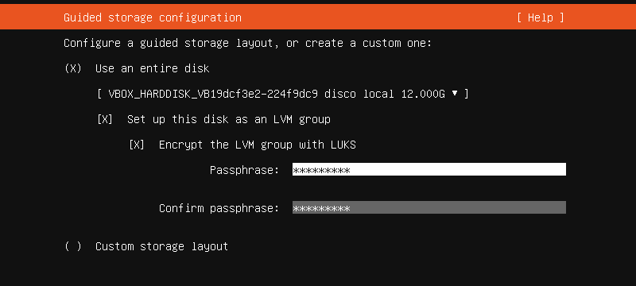
2
A continuación, el asistente informa de la configuración que se tiene del sistema de almacenamiento. Para continuar, hay que pulsar 'Hecho'.
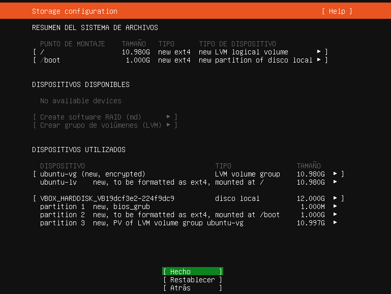
3
A continuación, hay que proporcionar el nombre de usuario y contraseña que se utilizará para acceder al sistema (usuario administrador del equipo) así como el nombre del servidor.
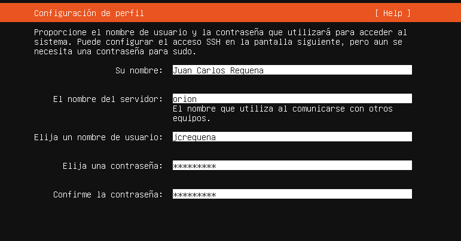
4
En la siguiente pantalla, nos permite instalar el servicio ssh.
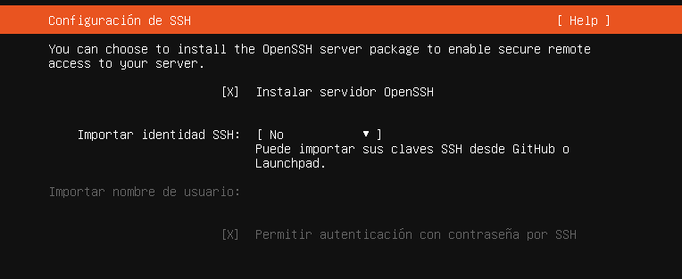
5
En la siguiente pantalla, se pueden seleccionar los servicios/aplicaciones que se deseen. Para continuar, hay que pulsar 'Hecho'.
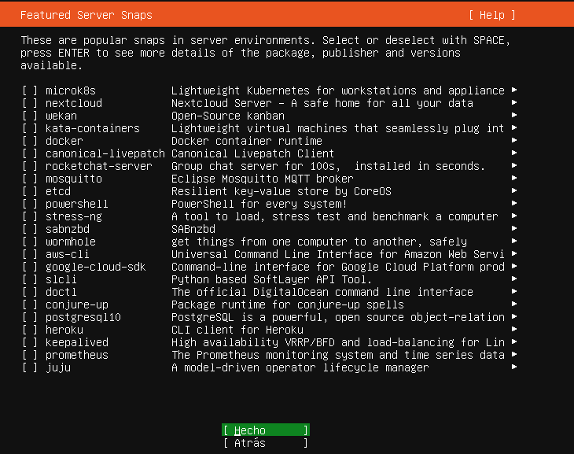
6
Comienza la instalación del servidor.
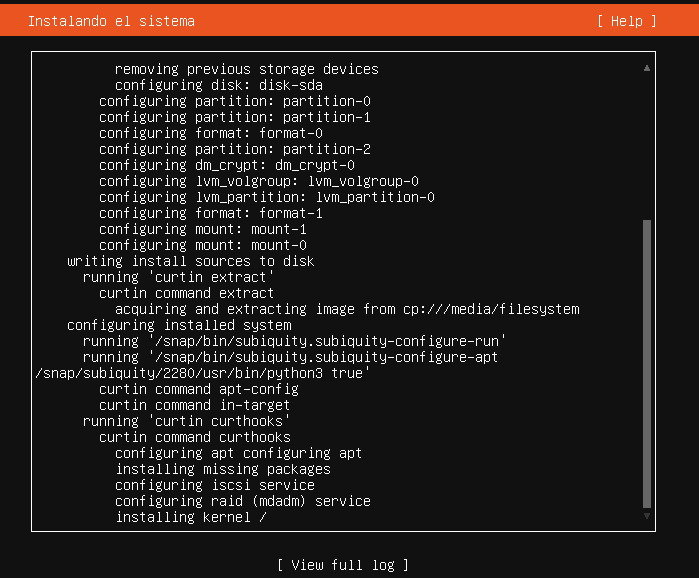
7
Una vez se finaliza la instalación y se inicia el sistema, nos solicita la contraseña de cifrado del disco. Una vez se introduce la contraseña, el sistema montará la partición y se podrá iniciar el sistema.
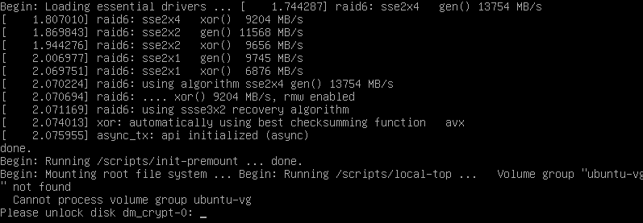
8
Podemos ver la información del disco con los comandos lsblk -fm o fdisk -l o df -h o lsscsi. En este caso, se utiliza el comando lsblk -fm y como se puede observar, la partición cifrada es dm_crypt-0.
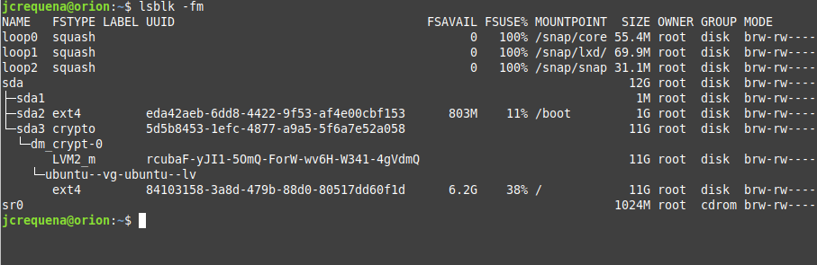
9
Si se lista el fichero crypttab que contiene los dispositivos de bloque cifrados durante el arranque del sistema, se puede observar que se tiene una partición cifrada con luks.
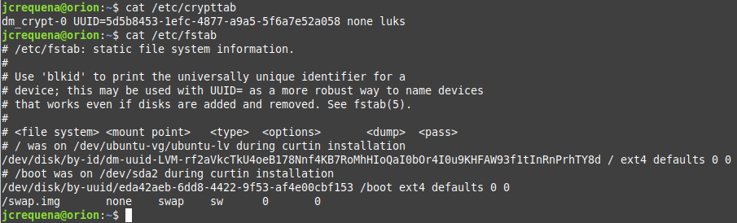
3.2 Opción 2.
Montar una partición/disco cifrado después de tener ya un sistema funcionando. Como ejemplo, se crea un nuevo disco en el servidor ubuntu para que posteriormente desde el sistema, se pueda cifrar.
A continuación se describe el proceso de cifrado de un disco.
Paso 1. Se añade un nuevo disco de 10 GB.
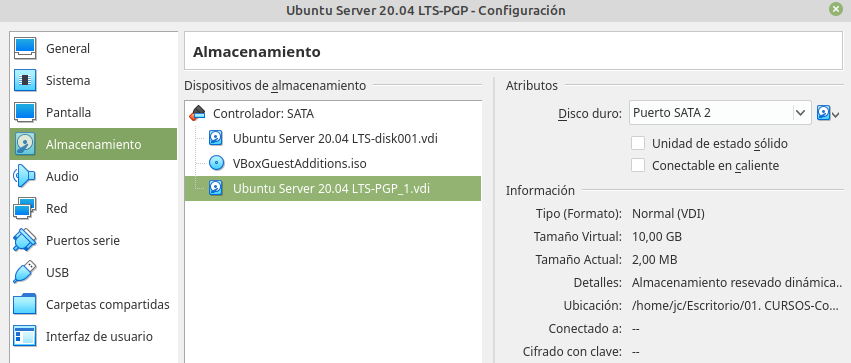
Paso 2. A continuación, se inicia el servidor para cifrar el disco creado.
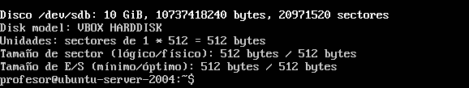
Paso 3. Para poder utilizar el disco, hay que crear una partición y luego formatearla. En primer lugar, se crea una partición usando todo el espacio disponible del disco 10GB mediante el comando fdisk.
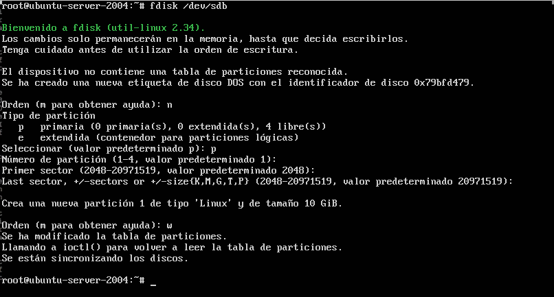
Paso 4. Comprobamos la nueva partición creada (sdb1).
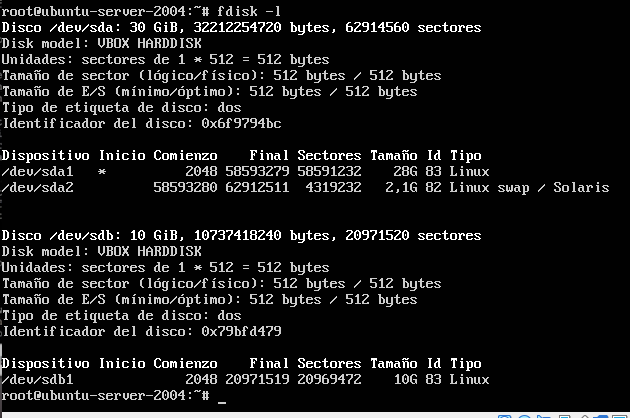
Paso 5. A continuación, mediante criptsetup convertimos la partición a formato LUKS.
root@ubuntu-server-2004:~#cryptsetup -v -y luksFormat /dev/sdb1
Al ejecutar el comando, nos informa que se van a sobreescribir los datos que existan en la partición. Si se está de acuerdo, poner YES en mayúsculas. A continuación, nos solicita una contraseña de encriptación (ver imagen inferior).
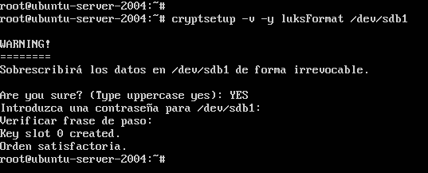
Paso 6. Para ver información de la partición que se acaba de encriptar, ejecutamos el siguiente comando:
root@ubuntu-server-2004:~#cryptsetup luksDump /dev/sdb1
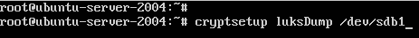
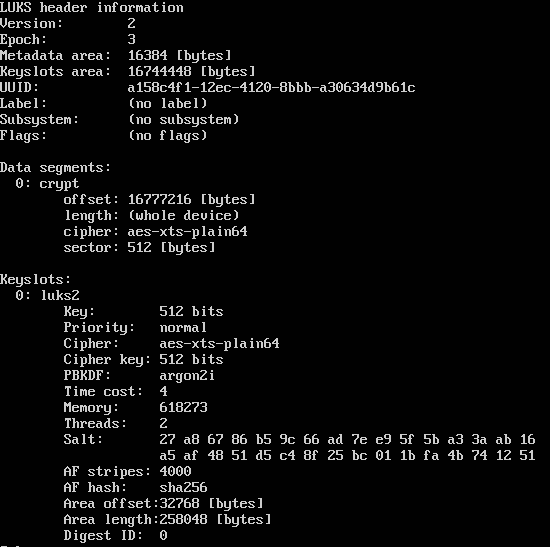
Como se puede observar en la imagen superior, la partición está encriptada con cifrado AES de 512 bits. El hash que utiliza, es sha256.
Paso 7. Para referirnos a la partición, se puede mapear a un nombre, ejemplo secret. Para ello, ejecutamos el siguiente comando:
root@ubuntu-server-2004:~#cryptsetup luksOpen /dev/sdb1 secret
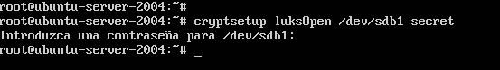
Si se lista el directorio donde están las unidades, /dev/mapper/secret, se observa que se tienen una unidad que se llama secret en la cual ya se puede trabajar en ella.
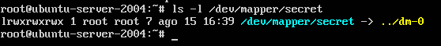
Se puede ver información de esa unidad con el comando:
root@ubuntu-server-2004:~#dmsetup info secret
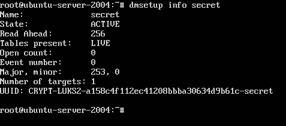
Paso 8. A continuación, hay que formatear la unidad. En este caso, se formatea al sistema de fichero ext4.
root@ubuntu-server-2004:~#mkfs.ext4 /dev/mapper/secret
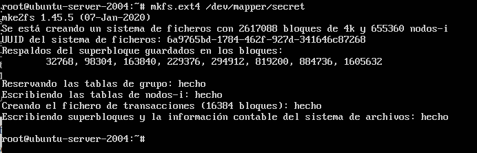
Paso 9. Para finalizar, hay que montar la unidad para poder utilizarla.
root@ubuntu-server-2004:~#mount /dev/mapper/secret /media/secret/
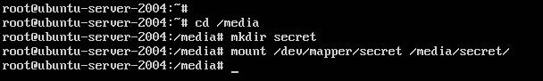
Con el comando df -h se puede ver que se tiene montantada la unidad secret y que tiene disponible 9,3GB en /media/secret.
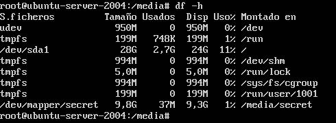
Como ejemplo de funcionamiento, se crea un fichero (fichero_prueba.dat) en la partición LUKS.
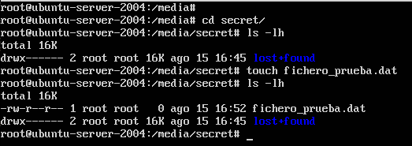
Paso 10. Montaje automático de la partición
Para que la partición LUKS se monte automáticamente al arrancar el sistema hay editar los ficheros /etc/crypttab y /etc/fstab para añadir esta partición a los mismos.
En primer lugar, hay que obtener el UUID de la partición LUKS encriptada, para ello, se usa el siguiente comando:
root@ubuntu-server-2004:~#cryptsetup luksUUID /dev/sdb1
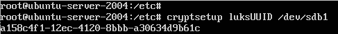
A continuación, abrimos el fichero crypttab que se encuentra en /etc mediante un editor de texto (ejemplo:nano), para añadir la información en la fila después de la cabecera.

A continuación, hay que realizar lo mismo con el fstab que se encuentra en /etc.
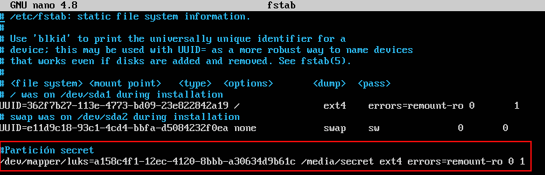
Si se desea añadir la partición en caliente, hay que ejecutar el siguiente comando:
root@ubuntu-server-2004:~#mount -a
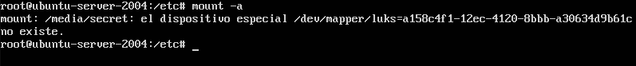
Como se puede observar en la imagen superior, el comando no funciona, ya que el sistema no reconoce la partición hasta que lea el fichero crypttab. Por lo tanto, hay que reiniciar el sistema.
Una vez se reinicia, el sistema se para al detectar la partición encriptada para que podamos ingresar la contraseña de la patición LUKS /media/secret.
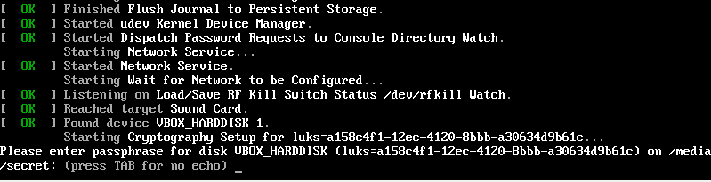
Una vez ingresamos la contraseña, si es correcta, se accede al sistema. Como se puede observar en la imagen inferior, se accede a la partición LUKS.
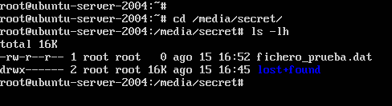
Para ver las particiones que se tienen montadas, usamos los comandos: lsblk -fm o fdisk -l o df -h o lsscsi.
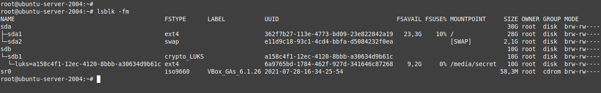
Otra forma de identificar las particiones cifradas es con el siguiente comando:
root@ubuntu-server-2004:~#sudo cat /etc/crypttab
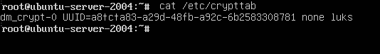
Obra publicada con Licencia Creative Commons Reconocimiento No comercial Compartir igual 4.0